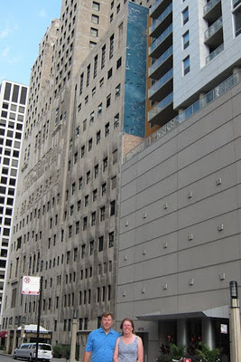

We went to spend the weekend in Chicago. It was our first time there and we had a great time. When it came time to look for the The Windy Whales we were not sure what we would find. Wikipedia lists the wall as extinct. We had no trouble finding the Inter-Continental hotel but when we got there we found that they had built an apartment building covering most of it. It’s an odd sight to see a sliver of a mural left exposed like that. It’s such a shame to destroy art like that. Especially in a city where architecture and distinctiveness is such a part of the city.